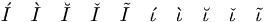

De: La Frikipedia, la enciclopedia extremadamente seria.
De: La Frikipedia, la enciclopedia extremadamente seria. De: La Frikipedia, la enciclopedia extremadamente seria.
| De la serie el abecedario es fácil: | |||
| I | |||
| |||
| ¿Cómo se representa? | Un palo pa'rriba. | ||
| Sonido | /IiiiiiiiiI/ | ||
| Idioma en que se usa | Iiiipés | ||
| Forma | Como un tipo estirado para arriba. | ||
| Usos | Escribir la I. | ||
| Dificultad de escritura | Poca. | ||
| Dificultad de pronunciación | Media. | ||
| ¿Es común? | Si... bueno... | ||
| Notas | Insuficiente. | ||
Palote erecto que se usa como consolador Vocal colocada probablemente entre la J aunque otros expertos apuntan a que está entre la E y la O.
¡Imbecil! I tú más!
Letra nacida en el barro marginal de las vocales. Por la calle las consonantes se reían de ella y los signos de puntuación le lanzaban ladrillos. Pero la I estudió y logró colocarse en el alfabeto. Así que ya sabéis niños si queréis ascender en la vida tenéis que chupársela a vuestros superiores trabajar duro como Chuck Norris.

Usad TeX, incultos.
/fdoghnoifhg/ en Klingon. En fónetica internacional sería: /agosrgbosigbàspgbiàrgb/.
Como ya hemos puntualizado la letra "i" puede ser colocada entre la H y la J o entre la E y la O, pero no en ambos sitios a la vez, ya que, entonces, Se produciría una paradoja espacio-temporal y se desatarían el Ragnarok, el Armaggedon y el fin del mundo a la vez. En caso de cagarla cometer tal error no hay salvación, Diox matará a Dios, Chuck Norris a Diox y Homer Simpson dejará la cerveza y los dulces por lo que el universo explotará y moriremos todos, Chuck incluido.
| |
| Letras |
| D • F • G • J • N Q • R • S • T • W • Y • Z |
| Símbolos |
| ← • → • ☃ • 蛋 • ☂ • இ • ټ • # • ? |
Autor(es):